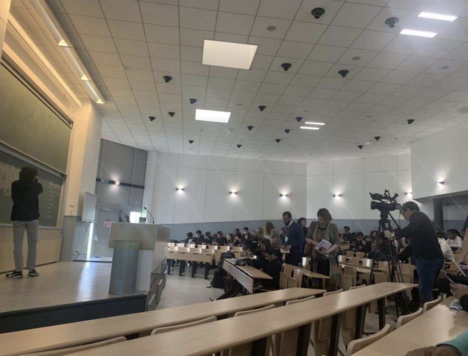
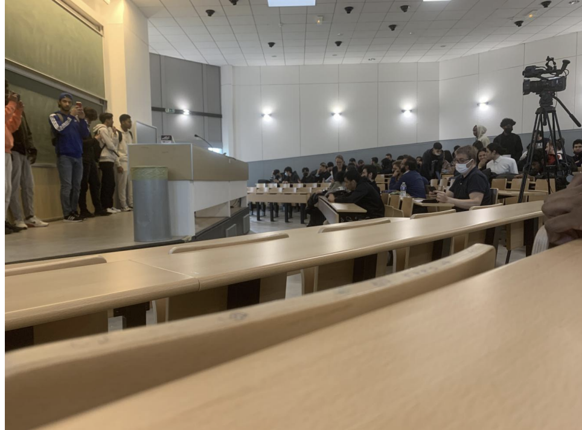
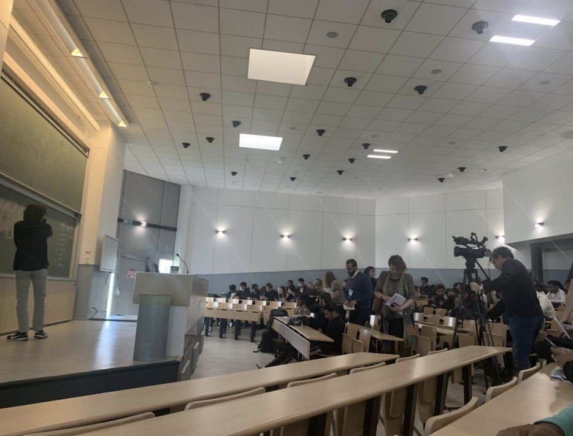
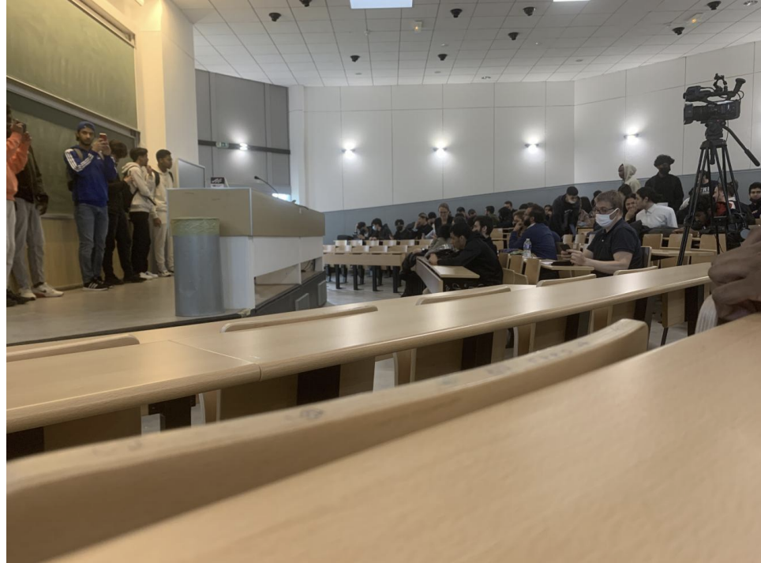

Our eloquence contest was initiated by the communication teachers of the IUT of Villetaneuse. The subject was decided beforehand by the teachers. This year, the participants will do us the honor of giving us a performance around the “meta-verse”. The work began 1 month before (during the month of March) in order to work well on the subject in all aspects. Teachers support students throughout sessions by providing their expertise and various advice. The students had to write a text in favor or against the “meta-verse”, while involving the different techniques of technesthesia (technique of oral expression which has the effect of developing sensory and motor of being and of the person in and through speech) in order to convince the audience. Following these sessions, the day of the assessment will define who the candidates are. likely to participate in the competition. The competition has 10 participants, 2 from each class pre-selected by the respective teachers.
The eloquence contest took place on the morning of Thursday, April 14, 2022. Several students got up early in the morning to watch the competition and cheer on their favourites. On place, several cameramen also came to cover the event. Everything started, with an overall presentation of the progress of the competition from the teachers. There's had several prizes up for grabs for the podium. In order to keep a certain justice between the participants, the drawing of lots was carried out by a neutral student. Of course there was a certain advantage linked to the order of passage but in the end, everything lies in the performance of the participant. The competition took place at top speed, the participants amazed us by their performances, there was theatricality, improvisation, emotion... At the end of performances, the teachers came out of the room to deliberate to give the final result. The teachers as well as the organization gathered on the stage in order to to announce the various winners. Following this, everyone was able to share their moments of happiness whether with the management, the teachers or their friends. This is how this magnificent eloquence contest ended.

 


